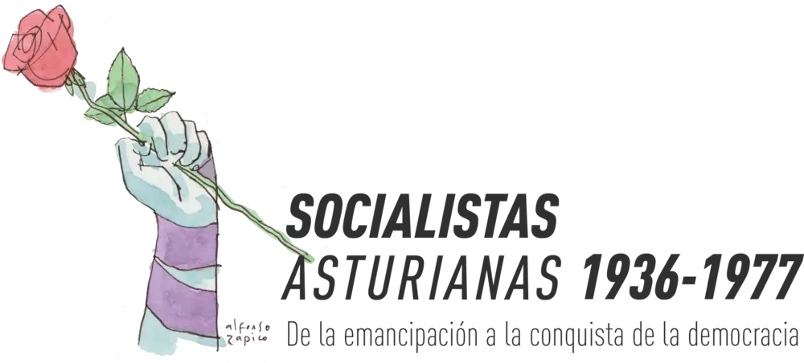

Ir al contenido

Menú
Inicio
Situación de aprendizaje 1
1 · ¡Compañeras, luchemos por nuestros derechos!
2 · Asturias en la Segunda República · Pendiente
3 · ¡Salud, compañeras! Antifascismo y democracia · Pendiente
4 · Asturias ocupada: violencia, represión y resistencia · Pendiente
5 · Violencia, represión y memoria democrática · Pendiente
6 · Huir de la represión: exilio y frontera · Pendiente
7 · Asturianas por la ciudadanía · Pendiente
Marco curricular
Intención educativa
Relación con ODS 2030
Conexión con los elementos curriculares
Saberes Básicos
Metodología
Agrupamientos
Secuenciación didáctica
Sesión 1 · ¿Súbditas o ciudadanas?
Sesión 2 · La campaña sufragista
Sesión 3 · Las pensadoras de la emancipación
Sesión 4 · Educación, trabajo y ciudadanía
Sesión 5 · La voz de las trabajadoras asturianas
Sesión 6 · Los primeros grupos femeninos socialistas en Asturias
Sesión 7 · Podcast feminista
Todas las sesiones
No se ha podido cargar el archivo de datos de la situación de aprendizaje (carpeta js/). La página se muestra sin contenido.
Esta página necesita JavaScript para mostrar la situación de aprendizaje.
Secuenciación didáctica
Sesión siguiente →
La campaña sufragista